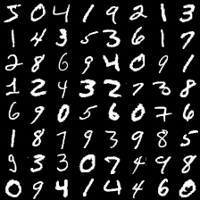

<!DOCTYPE HTML>
<html lang="" >
    <head>
        <meta charset="UTF-8">
        <meta content="text/html; charset=utf-8" http-equiv="Content-Type">
        <title>PyTorch · Entering PyTorch</title>
        <meta http-equiv="X-UA-Compatible" content="IE=edge" />
        <meta name="description" content="">
        <meta name="generator" content="GitBook 3.2.3">
        <meta name="author" content="木村 優志 Convegence Lab.">
        
        
    
    <link rel="stylesheet" href="gitbook/style.css">

    
            
                
                <link rel="stylesheet" href="gitbook/gitbook-plugin-katex/katex.min.css">
                
            
                
                <link rel="stylesheet" href="gitbook/gitbook-plugin-prism/prism.css">
                
            
                
                <link rel="stylesheet" href="gitbook/gitbook-plugin-web-header/plugin.css">
                
            
                
                <link rel="stylesheet" href="gitbook/gitbook-plugin-highlight/website.css">
                
            
                
                <link rel="stylesheet" href="gitbook/gitbook-plugin-search/search.css">
                
            
                
                <link rel="stylesheet" href="gitbook/gitbook-plugin-fontsettings/website.css">
                
            
        

    

    
        
    
        
    
        
    
        
    
        
    
        
    

        
    
    
    <meta name="HandheldFriendly" content="true"/>
    <meta name="viewport" content="width=device-width, initial-scale=1, user-scalable=no">
    <meta name="apple-mobile-web-app-capable" content="yes">
    <meta name="apple-mobile-web-app-status-bar-style" content="black">
    <link rel="apple-touch-icon-precomposed" sizes="152x152" href="gitbook/images/apple-touch-icon-precomposed-152.png">
    <link rel="shortcut icon" href="gitbook/images/favicon.ico" type="image/x-icon">

    
    
    <link rel="prev" href="settings.html" />
    

    </head>
    <body>
        
<div class="book">
    <div class="book-summary">
        
            
<div id="book-search-input" role="search">
    <input type="text" placeholder="Type to search" />
</div>

            
                <nav role="navigation">
                


<ul class="summary">
    
    

    

    
        
        
    
        <li class="chapter " data-level="1.1" data-path="./">
            
                <a href="./">
            
                    
                    Entering PyTorch
            
                </a>
            

            
        </li>
    
        <li class="chapter " data-level="1.2" data-path="machine_learning.html">
            
                <a href="machine_learning.html">
            
                    
                    機械学習
            
                </a>
            

            
        </li>
    
        <li class="chapter " data-level="1.3" data-path="about_deeplearning.html">
            
                <a href="about_deeplearning.html">
            
                    
                    ディープラーニング
            
                </a>
            

            
        </li>
    
        <li class="chapter " data-level="1.4" data-path="settings.html">
            
                <a href="settings.html">
            
                    
                    環境設定
            
                </a>
            

            
        </li>
    
        <li class="chapter active" data-level="1.5" data-path="pytorch.html">
            
                <a href="pytorch.html">
            
                    
                    PyTorch
            
                </a>
            

            
        </li>
    

    

    <li class="divider"></li>

    <li>
        <a href="https://www.gitbook.com" target="blank" class="gitbook-link">
            Published with GitBook
        </a>
    </li>
</ul>


                </nav>
            
        
    </div>

    <div class="book-body">
        
            <div class="body-inner">
                
                    

<div class="book-header" role="navigation">
    

    <!-- Title -->
    <h1>
        <i class="fa fa-circle-o-notch fa-spin"></i>
        <a href="." >PyTorch</a>
    </h1>
</div>


                    <div class="page-wrapper" tabindex="-1" role="main">
                        <div class="page-inner">
                            
<div id="book-search-results">
    <div class="search-noresults">
    
                                <section class="normal markdown-section">
                                
                                <h1 id="pytorch">PyTorch</h1>
<h2 id="pytorch&#x3068;&#x306F;&#xFF1F;">PyTorch&#x3068;&#x306F;&#xFF1F;</h2>
<p>PyTorch&#x306F;&#x3001;&#x30AA;&#x30FC;&#x30D7;&#x30F3;&#x30BD;&#x30FC;&#x30B9;&#x306E;Python &#x30C7;&#x30A3;&#x30FC;&#x30D7;&#x30E9;&#x30FC;&#x30CB;&#x30F3;&#x30B0;&#x30E9;&#x30A4;&#x30D6;&#x30E9;&#x30EA;&#x3067;&#x3059;&#x3002;&#x3082;&#x3068;&#x3082;&#x3068;&#x3001;Facebook&#x306B;&#x3088;&#x3063;&#x3066;&#x958B;&#x767A;&#x3055;&#x308C;&#x3066;&#x3044;&#x305F;&#x3082;&#x306E;&#x3067;&#x3059;&#x3002;</p>
<p>&#x516C;&#x5F0F;&#x30B5;&#x30A4;&#x30C8;&#x3067;&#x306F;&#x3001;PyTorch&#x3092;&#x4EE5;&#x4E0B;&#x306E;&#x3088;&#x3046;&#x306B;&#x8AAC;&#x660E;&#x3057;&#x3066;&#x3044;&#x307E;&#x3059;&#x3002;</p>
<blockquote>
<p>An open source machine learning framework that accelerates the path from research prototyping to production deployment.</p>
<p>&#x3000;&#x8A33;&#xFF1A; &#x7814;&#x7A76;&#x7528;&#x30D7;&#x30ED;&#x30C8;&#x30BF;&#x30A4;&#x30D7;&#x304B;&#x3089;&#x30D7;&#x30ED;&#x30C0;&#x30AF;&#x30C8;&#x958B;&#x767A;&#x307E;&#x3067;&#x306E;&#x30D1;&#x30B9;&#x3092;&#x52A0;&#x901F;&#x3055;&#x305B;&#x308B;&#x3001;&#x30AA;&#x30FC;&#x30D7;&#x30F3;&#x30BD;&#x30FC;&#x30B9;&#x306E;&#x6A5F;&#x68B0;&#x5B66;&#x7FD2;&#x30D5;&#x30EC;&#x30FC;&#x30E0;&#x30EF;&#x30FC;&#x30AF;&#x3002;</p>
</blockquote>
<p>&#x30C7;&#x30A3;&#x30FC;&#x30D7;&#x30E9;&#x30FC;&#x30CB;&#x30F3;&#x30B0;&#x3092;&#x66F8;&#x304F;&#x305F;&#x3081;&#x306E;&#x30E9;&#x30A4;&#x30D6;&#x30E9;&#x30EA;&#x306F;&#x3044;&#x304F;&#x3064;&#x304B;&#x5B58;&#x5728;&#x3057;&#x307E;&#x3059;&#x3002;Google&#x306E;TensorFlow&#x3084;&#x305D;&#x306E;&#x9AD8;&#x30EC;&#x30D9;&#x30EB;API&#x3067;&#x3042;&#x308B;Keras&#x3001;Preffered Networkds&#x306E;Chainer&#x304C;&#x6709;&#x540D;&#x3067;&#x3059;&#x3002;&#x3053;&#x306E;&#x4E2D;&#x3067;&#x8FD1;&#x5E74;&#x4EBA;&#x6C17;&#x3092;&#x5897;&#x3084;&#x3057;&#x3066;&#x3044;&#x308B;&#x306E;&#x304C;PyTorch&#x3067;&#x3059;&#x3002;<a href="https://trends.google.co.jp/trends/explore?geo=JP&amp;q=PyTorch,TensorFlow,Chainer" target="_blank">Google Trends&#x306B;&#x3088;&#x308B;&#x691C;&#x7D22;&#x6570;&#x306E;&#x6BD4;&#x8F03;</a>&#x3092;&#x898B;&#x3066;&#x307F;&#x307E;&#x3057;&#x3087;&#x3046;&#x3002;&#x691C;&#x7D22;&#x6570;&#x304C;&#x4E00;&#x756A;&#x591A;&#x3044;&#x306E;&#x306F;TensorFlow&#x3067;2&#x756A;&#x76EE;&#x304C;Kersa&#x3067;&#xFF13;&#x756A;&#x76EE;&#x304C;PyTorch&#x3067;&#x3059;&#x3002;&#x5F90;&#x3005;&#x306B;TensorFlow&#x3084; Keras&#x306E;&#x691C;&#x7D22;&#x6570;&#x304C;&#x6E1B;&#x3063;&#x3066;&#x3044;&#x308B;&#x306E;&#x306B;&#x5BFE;&#x3057;&#x3001;PyTorch&#x306E;&#x691C;&#x7D22;&#x6570;&#x306F;&#x5F90;&#x3005;&#x306B;&#x5897;&#x3048;&#x3066;&#x3044;&#x308B;&#x306E;&#x304C;&#x307F;&#x3066;&#x53D6;&#x308C;&#x307E;&#x3059;&#x3002;&#x8FD1;&#x5E74;&#x306B;&#x306A;&#x3063;&#x3066;PyTorch&#x306E;&#x4EBA;&#x6C17;&#x304C;&#x9AD8;&#x307E;&#x3063;&#x3066;&#x3044;&#x308B;&#x306E;&#x304C;&#x308F;&#x304B;&#x308A;&#x307E;&#x3059;&#x3002;</p>
<p>PyTorch&#x306E;&#x4EBA;&#x6C17;&#x306E;&#x79D8;&#x5BC6;&#x306F;&#x3001;&#x305D;&#x306E;&#x66F8;&#x304D;&#x3084;&#x3059;&#x3055;&#x3068;&#x30D7;&#x30ED;&#x30C0;&#x30AF;&#x30C8;&#x3078;&#x306E;&#x904B;&#x7528;&#x306E;&#x3057;&#x3084;&#x3059;&#x3055;&#x306E;&#x30D0;&#x30E9;&#x30F3;&#x30B9;&#x306B;&#x3042;&#x308B;&#x3068;&#x601D;&#x3044;&#x307E;&#x3059;&#x3002;&#x305F;&#x3068;&#x3048;&#x3070;&#x3001;Keras&#x306F;&#x975E;&#x5E38;&#x306B;&#x66F8;&#x304D;&#x3084;&#x3059;&#x3044;&#x30E9;&#x30A4;&#x30D6;&#x30E9;&#x30EA;&#x3067;&#x3059;&#x304C;&#x3001;&#x5B9F;&#x904B;&#x7528;&#x306B;&#x306F;&#x3084;&#x3084;&#x5DE5;&#x592B;&#x304C;&#x5FC5;&#x8981;&#x306B;&#x306A;&#x308A;&#x307E;&#x3059;&#x3002;TensorFlow&#x306F;&#x3001;2.0&#x306B;&#x306A;&#x3063;&#x3066;&#x304B;&#x3089;&#x3084;&#x3084;&#x66F8;&#x304D;&#x3084;&#x3059;&#x304F;&#x306A;&#x3063;&#x305F;&#x3082;&#x306E;&#x306E;&#x3001;&#x8907;&#x96D1;&#x306A;API&#x3092;&#x64CD;&#x4F5C;&#x3059;&#x308B;&#x5FC5;&#x8981;&#x304C;&#x3042;&#x308A;&#x307E;&#x3059;&#x3002;PyTorch&#x306F;&#x305D;&#x306E;&#x4E2D;&#x3067;&#x73FE;&#x5B9F;&#x7684;&#x306A;&#x30D0;&#x30E9;&#x30F3;&#x30B9;&#x3092;&#x6301;&#x3063;&#x3066;&#x3044;&#x307E;&#x3059;&#x3002;&#x3042;&#x308B;&#x7A0B;&#x5EA6;&#x306E;&#x66F8;&#x304D;&#x3084;&#x3059;&#x3055;&#x3092;&#x7DAD;&#x6301;&#x3057;&#x305F;&#x307E;&#x307E;&#x3001;&#x904B;&#x7528;&#x306E;&#x3057;&#x3084;&#x3059;&#x3055;&#x3092;&#x4E21;&#x7ACB;&#x3057;&#x3066;&#x3044;&#x307E;&#x3059;&#x3002;</p>
<h2 id="pytorch&#x306E;&#x30D7;&#x30ED;&#x30B0;&#x30E9;&#x30E0;&#x3092;&#x66F8;&#x3044;&#x3066;&#x307F;&#x3088;&#x3046;">PyTorch&#x306E;&#x30D7;&#x30ED;&#x30B0;&#x30E9;&#x30E0;&#x3092;&#x66F8;&#x3044;&#x3066;&#x307F;&#x3088;&#x3046;</h2>
<p>&#x5B9F;&#x969B;&#x306E;PyTorch&#x306E;&#x30D7;&#x30ED;&#x30B0;&#x30E9;&#x30E0;&#x304C;&#x3069;&#x306E;&#x3088;&#x3046;&#x306A;&#x3082;&#x306E;&#x304B;&#x3092;&#x307F;&#x3066;&#x3044;&#x304D;&#x307E;&#x3057;&#x3087;&#x3046;&#x3002;&#x624B;&#x59CB;&#x3081;&#x306B; &#x624B;&#x66F8;&#x304D;&#x6570;&#x5B57;&#x306E;&#x30C7;&#x30FC;&#x30BF;&#x30BB;&#x30C3;&#x30C8;&#x3067;&#x3042;&#x308B;MNIST&#x3092;PyTorch&#x3067;&#x8A8D;&#x8B58;&#x3055;&#x305B;&#x3066;&#x307F;&#x307E;&#x3057;&#x3087;&#x3046;&#x3002;MNIST&#x306B;&#x542B;&#x307E;&#x308C;&#x3066;&#x3044;&#x308B;&#x6570;&#x5B57;&#x3092;&#x63CF;&#x753B;&#x3059;&#x308B;&#x3068;&#x4EE5;&#x4E0B;&#x306E;&#x3088;&#x3046;&#x306B;&#x306A;&#x308A;&#x307E;&#x3059;&#x3002;&#x3053;&#x306E;&#x753B;&#x50CF;&#x304C;&#x3069;&#x306E;&#x6570;&#x5B57;&#x306A;&#x306E;&#x304B;&#x3092;&#x5F53;&#x3066;&#x308B;&#x306E;&#x304C;&#x4ECA;&#x56DE;&#x306E;&#x554F;&#x984C;&#x3067;&#x3059;&#x3002;</p>
<p></p>
<p>PyTorch&#x306E;&#x30B3;&#x30FC;&#x30C9;&#x306F;&#x4EE5;&#x4E0B;&#x306E;&#x3088;&#x3046;&#x306B;&#x306A;&#x308A;&#x307E;&#x3059;&#x3002;&#x540C;&#x3058;&#x30B3;&#x30FC;&#x30C9;&#x306F;&#x3001;<a href="https://github.com/convergence-lab/Entering-PyTorch/blob/master/src/about_pytorch/mnist/mnist.py" target="_blank">https://github.com/convergence-lab/Entering-PyTorch/blob/master/src/about_pytorch/mnist/mnist.py</a>&#x304B;&#x3089;&#x5165;&#x624B;&#x3067;&#x304D;&#x307E;&#x3059;&#x3002;</p>
<pre class="language-"><code class="lang-python"><span class="token keyword">from</span> tqdm <span class="token keyword">import</span> tqdm

<span class="token keyword">import</span> torch
<span class="token keyword">from</span> torch <span class="token keyword">import</span> nn<span class="token punctuation">,</span> optim
<span class="token keyword">import</span> torch<span class="token punctuation">.</span>nn<span class="token punctuation">.</span>functional <span class="token keyword">as</span> F
<span class="token keyword">from</span> torchvision <span class="token keyword">import</span> datasets<span class="token punctuation">,</span> transforms

<span class="token keyword">class</span> <span class="token class-name">Net</span><span class="token punctuation">(</span>nn<span class="token punctuation">.</span>Module<span class="token punctuation">)</span><span class="token punctuation">:</span>
    <span class="token triple-quoted-string string">&quot;&quot;&quot;Net Module
    MNIST&#x3092;&#x5B66;&#x7FD2;&#x3059;&#x308B;&#x305F;&#x3081;&#x306E;&#x30CD;&#x30C3;&#x30C8;&#x30EF;&#x30FC;&#x30AF;
    &quot;&quot;&quot;</span>
    <span class="token keyword">def</span> <span class="token function">__init__</span><span class="token punctuation">(</span>self<span class="token punctuation">)</span><span class="token punctuation">:</span>
        <span class="token triple-quoted-string string">&quot;&quot;&quot;__init__&#x3067;&#x306F;Network&#x306E;&#x521D;&#x671F;&#x5316;&#x3092;&#x3059;&#x308B;&#x3002;
        &#x3069;&#x306E;&#x3088;&#x3046;&#x306A;&#x30EC;&#x30A4;&#x30E4;&#x3092;&#x4F7F;&#x3046;&#x306E;&#x304B;&#x3092;&#x5B9A;&#x7FA9;&#x3059;&#x308B;
        &quot;&quot;&quot;</span>
        <span class="token builtin">super</span><span class="token punctuation">(</span>Net<span class="token punctuation">,</span> self<span class="token punctuation">)</span><span class="token punctuation">.</span>__init__<span class="token punctuation">(</span><span class="token punctuation">)</span>
        self<span class="token punctuation">.</span>base_net <span class="token operator">=</span> nn<span class="token punctuation">.</span>Sequential<span class="token punctuation">(</span> <span class="token comment"># base_net&#x306F;&#x7279;&#x5FB4;&#x5206;&#x6790;&#x7528;&#x306E;&#x30CD;&#x30C3;&#x30C8;&#x30EF;&#x30FC;&#x30AF;</span>
            nn<span class="token punctuation">.</span>Conv2d<span class="token punctuation">(</span><span class="token number">1</span><span class="token punctuation">,</span> <span class="token number">20</span><span class="token punctuation">,</span> <span class="token number">5</span><span class="token punctuation">,</span> <span class="token number">1</span><span class="token punctuation">)</span><span class="token punctuation">,</span>     <span class="token comment"># Conv2D&#x30EC;&#x30A4;&#x30E4;</span>
            nn<span class="token punctuation">.</span>ReLU<span class="token punctuation">(</span><span class="token punctuation">)</span><span class="token punctuation">,</span>                  <span class="token comment"># ReLU&#x6D3B;&#x6027;&#x5316;&#x95A2;&#x6570;</span>
            nn<span class="token punctuation">.</span>MaxPool2d<span class="token punctuation">(</span><span class="token number">2</span><span class="token punctuation">)</span><span class="token punctuation">,</span>            <span class="token comment"># maxpooling&#x30EC;&#x30A4;&#x30E4;</span>
            nn<span class="token punctuation">.</span>Conv2d<span class="token punctuation">(</span><span class="token number">20</span><span class="token punctuation">,</span> <span class="token number">40</span><span class="token punctuation">,</span> <span class="token number">5</span><span class="token punctuation">,</span> <span class="token number">1</span><span class="token punctuation">)</span><span class="token punctuation">,</span>    <span class="token comment"># Conv2D&#x30EC;&#x30A4;&#x30E4;</span>
            nn<span class="token punctuation">.</span>ReLU<span class="token punctuation">(</span><span class="token punctuation">)</span>                   <span class="token comment"># ReLU&#x6D3B;&#x6027;&#x5316;&#x95A2;&#x6570;</span>
        <span class="token punctuation">)</span>
        self<span class="token punctuation">.</span>classfier <span class="token operator">=</span> nn<span class="token punctuation">.</span>Sequential<span class="token punctuation">(</span> <span class="token comment"># classifier&#x306F;&#x5206;&#x985E;&#x7528;&#x306E;&#x30CD;&#x30C3;&#x30C8;&#x30EF;&#x30FC;&#x30AF;</span>
            nn<span class="token punctuation">.</span>Linear<span class="token punctuation">(</span><span class="token number">40</span><span class="token operator">*</span><span class="token number">8</span><span class="token operator">*</span><span class="token number">8</span><span class="token punctuation">,</span> <span class="token number">100</span><span class="token punctuation">)</span><span class="token punctuation">,</span>     <span class="token comment"># Linear&#x30EC;&#x30A4;&#x30E4;&#x3001; 40*8*8&#x30E6;&#x30CB;&#x30C3;&#x30C8;&#x306E;&#x5165;&#x529B;&#x3092;&#x53D7;&#x3051;&#x3066;&#x3001; 100&#x30E6;&#x30CB;&#x30C3;&#x30C8;&#x3092;&#x51FA;&#x529B;&#x3059;&#x308B;</span>
            nn<span class="token punctuation">.</span>ReLU<span class="token punctuation">(</span><span class="token punctuation">)</span><span class="token punctuation">,</span>                  <span class="token comment"># ReLU&#x6D3B;&#x6027;&#x5316;&#x95A2;&#x6570;</span>
            nn<span class="token punctuation">.</span>Linear<span class="token punctuation">(</span><span class="token number">100</span><span class="token punctuation">,</span> <span class="token number">10</span><span class="token punctuation">)</span><span class="token punctuation">,</span>         <span class="token comment"># Linear&#x30EC;&#x30A4;&#x30E4;&#x3000;&#x3000;MNIST&#x306F; 10&#x3053;&#x306E;&#x6570;&#x5B57;&#x3092;&#x5F53;&#x3066;&#x308B;&#x554F;&#x984C;&#x306A;&#x306E;&#x3067;&#x51FA;&#x529B;&#x306F;10&#x30E6;&#x30CB;&#x30C3;&#x30C8;</span>
            nn<span class="token punctuation">.</span>LogSoftmax<span class="token punctuation">(</span><span class="token punctuation">)</span>             <span class="token comment"># LogSoftmax&#x30EC;&#x30A4;&#x30E4;</span>
        <span class="token punctuation">)</span>

    <span class="token keyword">def</span> <span class="token function">forward</span><span class="token punctuation">(</span>self<span class="token punctuation">,</span> x<span class="token punctuation">)</span><span class="token punctuation">:</span>
        <span class="token triple-quoted-string string">&quot;&quot;&quot;forward&#x3067;&#x306F;&#x3001;&#x3069;&#x306E;&#x3088;&#x3046;&#x306B;&#x30C7;&#x30FC;&#x30BF;&#x3092;&#x30CD;&#x30C3;&#x30C8;&#x30EF;&#x30FC;&#x30AF;&#x306B;&#x901A;&#x3059;&#x304B;&#x3092;&#x66F8;&#x304F;
        &quot;&quot;&quot;</span>
        x <span class="token operator">=</span> self<span class="token punctuation">.</span>base_net<span class="token punctuation">(</span>x<span class="token punctuation">)</span>     <span class="token comment"># base_net&#x3078;&#x7279;&#x5FB4;&#x3092;&#x901A;&#x3059;</span>
        x <span class="token operator">=</span> x<span class="token punctuation">.</span>view<span class="token punctuation">(</span><span class="token operator">-</span><span class="token number">1</span><span class="token punctuation">,</span> <span class="token number">40</span><span class="token operator">*</span><span class="token number">8</span><span class="token operator">*</span><span class="token number">8</span><span class="token punctuation">)</span>   <span class="token comment"># base_net&#x3068; classifier&#x3067;&#x306F;&#x5165;&#x529B;&#x30C6;&#x30F3;&#x30BD;&#x30EB;&#x306E;&#x5F62;&#x304C;&#x9055;&#x3046;&#x306E;&#x3067;&#x5909;&#x5F62;&#x3059;&#x308B;</span>
        x <span class="token operator">=</span> self<span class="token punctuation">.</span>classfier<span class="token punctuation">(</span>x<span class="token punctuation">)</span>    <span class="token comment"># classifier&#x3078;&#x901A;&#x3059;</span>
        <span class="token keyword">return</span> x


<span class="token keyword">def</span> <span class="token function">train</span><span class="token punctuation">(</span>model<span class="token punctuation">,</span> device<span class="token punctuation">,</span> train_loader<span class="token punctuation">,</span> optimizer<span class="token punctuation">,</span> criterion<span class="token punctuation">,</span> epoch<span class="token punctuation">)</span><span class="token punctuation">:</span>
    <span class="token triple-quoted-string string">&quot;&quot;&quot;
    &#x5B66;&#x7FD2;&#x7528;&#x306E;&#x95A2;&#x6570;
    &quot;&quot;&quot;</span>
    model<span class="token punctuation">.</span>train<span class="token punctuation">(</span><span class="token punctuation">)</span>    <span class="token comment"># Network&#x3092;&#x5B66;&#x7FD2;&#x30E2;&#x30FC;&#x30C9;&#x306B;&#x3059;&#x308B;</span>
    train_loss <span class="token operator">=</span> <span class="token number">0</span>
    <span class="token keyword">for</span> batch <span class="token keyword">in</span> tqdm<span class="token punctuation">(</span>train_loader<span class="token punctuation">)</span><span class="token punctuation">:</span>
        data<span class="token punctuation">,</span> target <span class="token operator">=</span> batch                              <span class="token comment"># batch&#x304B;&#x3089;&#x30C7;&#x30FC;&#x30BF;&#x3068;&#x30BF;&#x30FC;&#x30B2;&#x30C3;&#x30C8;&#x3092;&#x53D6;&#x308A;&#x51FA;&#x3059;</span>
        data<span class="token punctuation">,</span> target <span class="token operator">=</span> data<span class="token punctuation">.</span>to<span class="token punctuation">(</span>device<span class="token punctuation">)</span><span class="token punctuation">,</span> target<span class="token punctuation">.</span>to<span class="token punctuation">(</span>device<span class="token punctuation">)</span> <span class="token comment"># &#x30C7;&#x30D0;&#x30A4;&#x30B9;&#x3078;&#x30C7;&#x30FC;&#x30BF;&#x3092;&#x8EE2;&#x9001;</span>
        optimizer<span class="token punctuation">.</span>zero_grad<span class="token punctuation">(</span><span class="token punctuation">)</span>                             <span class="token comment"># &#x52FE;&#x914D;&#x306E;&#x60C5;&#x5831;&#x3092;&#x30BC;&#x30ED;&#x306B;&#x30EA;&#x30BB;&#x30C3;&#x30C8;</span>
        pred <span class="token operator">=</span> model<span class="token punctuation">(</span>data<span class="token punctuation">)</span>                                <span class="token comment"># &#x30CD;&#x30C3;&#x30C8;&#x30EF;&#x30FC;&#x30AF;&#x306B;&#x30C7;&#x30FC;&#x30BF;&#x3092;&#x5165;&#x308C;&#x308B;</span>
        loss <span class="token operator">=</span> criterion<span class="token punctuation">(</span>pred<span class="token punctuation">,</span> target<span class="token punctuation">)</span>                    <span class="token comment"># &#x640D;&#x5931;&#x3092;&#x8A08;&#x7B97;</span>
        loss<span class="token punctuation">.</span>backward<span class="token punctuation">(</span><span class="token punctuation">)</span>                                   <span class="token comment"># &#x52FE;&#x914D;&#x3092;&#x8A08;&#x7B97;</span>
        optimizer<span class="token punctuation">.</span>step<span class="token punctuation">(</span><span class="token punctuation">)</span>                                  <span class="token comment"># &#x30CD;&#x30C3;&#x30C8;&#x30EF;&#x30FC;&#x30AF;&#x3092;&#x66F4;&#x65B0;</span>
        train_loss <span class="token operator">+=</span> loss<span class="token punctuation">.</span>item<span class="token punctuation">(</span><span class="token punctuation">)</span>                         <span class="token comment"># &#x640D;&#x5931;&#x3092;&#x8A18;&#x9332;</span>
    <span class="token keyword">print</span><span class="token punctuation">(</span><span class="token string-interpolation"><span class="token string">f&quot;Epoch </span><span class="token interpolation"><span class="token punctuation">{</span>epoch<span class="token punctuation">}</span></span><span class="token string">: Train loss </span><span class="token interpolation"><span class="token punctuation">{</span>train_loss <span class="token operator">/</span> <span class="token builtin">len</span><span class="token punctuation">(</span>train_loader<span class="token punctuation">)</span><span class="token punctuation">}</span></span><span class="token string">&quot;</span></span><span class="token punctuation">)</span>

<span class="token keyword">def</span> <span class="token function">test</span><span class="token punctuation">(</span>model<span class="token punctuation">,</span> device<span class="token punctuation">,</span> test_loader<span class="token punctuation">,</span> criterion<span class="token punctuation">,</span> epoch<span class="token punctuation">)</span><span class="token punctuation">:</span>
    <span class="token triple-quoted-string string">&quot;&quot;&quot;
    &#x8A55;&#x4FA1;&#x7528;&#x306E;&#x95A2;&#x6570;
    &#x8A55;&#x4FA1;&#x7528;&#x306E;&#x95A2;&#x6570;&#x3067;&#x306F;&#x3001;&#x5B66;&#x7FD2;&#x3068;&#x9055;&#x3044;&#x3001;optimizer&#x304C;&#x4E0D;&#x8981;
    &quot;&quot;&quot;</span>
    model<span class="token punctuation">.</span><span class="token builtin">eval</span><span class="token punctuation">(</span><span class="token punctuation">)</span>   <span class="token comment"># &#x30CD;&#x30C3;&#x30C8;&#x30EF;&#x30FC;&#x30AF;&#x3092;&#x8A55;&#x4FA1;&#x30E2;&#x30FC;&#x30C9;&#x306B;</span>
    test_loss <span class="token operator">=</span> <span class="token number">0</span>
    correct <span class="token operator">=</span> <span class="token number">0</span>
    <span class="token keyword">for</span> batch <span class="token keyword">in</span> tqdm<span class="token punctuation">(</span>test_loader<span class="token punctuation">)</span><span class="token punctuation">:</span>
        data<span class="token punctuation">,</span> target <span class="token operator">=</span> batch
        data<span class="token punctuation">,</span> target <span class="token operator">=</span> data<span class="token punctuation">.</span>to<span class="token punctuation">(</span>device<span class="token punctuation">)</span><span class="token punctuation">,</span> target<span class="token punctuation">.</span>to<span class="token punctuation">(</span>device<span class="token punctuation">)</span>
        pred <span class="token operator">=</span> model<span class="token punctuation">(</span>data<span class="token punctuation">)</span>
        loss <span class="token operator">=</span> criterion<span class="token punctuation">(</span>pred<span class="token punctuation">,</span> target<span class="token punctuation">)</span>
        test_loss <span class="token operator">+=</span> loss<span class="token punctuation">.</span>item<span class="token punctuation">(</span><span class="token punctuation">)</span>
        correct <span class="token operator">+=</span> pred<span class="token punctuation">.</span>argmax<span class="token punctuation">(</span>dim<span class="token operator">=</span><span class="token number">1</span><span class="token punctuation">)</span><span class="token punctuation">.</span>eq<span class="token punctuation">(</span>target<span class="token punctuation">)</span><span class="token punctuation">.</span><span class="token builtin">sum</span><span class="token punctuation">(</span><span class="token punctuation">)</span><span class="token punctuation">.</span>item<span class="token punctuation">(</span><span class="token punctuation">)</span>    <span class="token comment"># &#x6B63;&#x89E3;&#x7387;&#x3092;&#x8A08;&#x7B97;</span>
    <span class="token keyword">print</span><span class="token punctuation">(</span><span class="token string-interpolation"><span class="token string">f&quot;Epoch </span><span class="token interpolation"><span class="token punctuation">{</span>epoch<span class="token punctuation">}</span></span><span class="token string">: Test loss </span><span class="token interpolation"><span class="token punctuation">{</span>test_loss <span class="token operator">/</span> <span class="token builtin">len</span><span class="token punctuation">(</span>test_loader<span class="token punctuation">)</span><span class="token punctuation">}</span></span><span class="token string">, Accuracy </span><span class="token interpolation"><span class="token punctuation">{</span><span class="token number">100</span><span class="token punctuation">.</span> <span class="token operator">*</span> correct <span class="token operator">/</span> <span class="token builtin">len</span><span class="token punctuation">(</span>test_loader<span class="token punctuation">.</span>dataset<span class="token punctuation">)</span><span class="token punctuation">}</span></span><span class="token string"> %&quot;</span></span><span class="token punctuation">)</span>

<span class="token keyword">def</span> <span class="token function">main</span><span class="token punctuation">(</span><span class="token punctuation">)</span><span class="token punctuation">:</span>
    <span class="token triple-quoted-string string">&quot;&quot;&quot;
    main&#x95A2;&#x6570;
    &quot;&quot;&quot;</span>
    torch<span class="token punctuation">.</span>manual_seed<span class="token punctuation">(</span><span class="token number">0</span><span class="token punctuation">)</span>  <span class="token comment"># &#x30B7;&#x30FC;&#x30C9;&#x3092;&#x56FA;&#x5B9A;</span>
    device <span class="token operator">=</span> torch<span class="token punctuation">.</span>device<span class="token punctuation">(</span><span class="token string">&quot;cuda&quot;</span> <span class="token keyword">if</span> torch<span class="token punctuation">.</span>cuda<span class="token punctuation">.</span>is_available<span class="token punctuation">(</span><span class="token punctuation">)</span> <span class="token keyword">else</span> <span class="token string">&quot;cpu&quot;</span><span class="token punctuation">)</span>  <span class="token comment"># CUDA&#x304C;&#x5229;&#x7528;&#x3067;&#x304D;&#x308B;&#x306A;r&#x3042;&#x5229;&#x7528;&#x3059;&#x308B;</span>

    epoch <span class="token operator">=</span> <span class="token number">5</span>
    batch_size <span class="token operator">=</span> <span class="token number">100</span>
    save_model <span class="token operator">=</span> <span class="token boolean">False</span>

    <span class="token comment"># &#x5B66;&#x7FD2;&#x30C7;&#x30FC;&#x30BF;&#x3092;&#x8AAD;&#x307F;&#x8FBC;&#x3080;</span>
    train_loader <span class="token operator">=</span> torch<span class="token punctuation">.</span>utils<span class="token punctuation">.</span>data<span class="token punctuation">.</span>DataLoader<span class="token punctuation">(</span>
        datasets<span class="token punctuation">.</span>MNIST<span class="token punctuation">(</span><span class="token string">&apos;../../../data&apos;</span><span class="token punctuation">,</span> train<span class="token operator">=</span><span class="token boolean">True</span><span class="token punctuation">,</span> download<span class="token operator">=</span><span class="token boolean">True</span><span class="token punctuation">,</span>
                       transform<span class="token operator">=</span>transforms<span class="token punctuation">.</span>Compose<span class="token punctuation">(</span><span class="token punctuation">[</span>
                           transforms<span class="token punctuation">.</span>ToTensor<span class="token punctuation">(</span><span class="token punctuation">)</span><span class="token punctuation">,</span>
                           transforms<span class="token punctuation">.</span>Normalize<span class="token punctuation">(</span><span class="token punctuation">(</span><span class="token number">0.1307</span><span class="token punctuation">,</span><span class="token punctuation">)</span><span class="token punctuation">,</span> <span class="token punctuation">(</span><span class="token number">0.3081</span><span class="token punctuation">,</span><span class="token punctuation">)</span><span class="token punctuation">)</span>
                       <span class="token punctuation">]</span><span class="token punctuation">)</span><span class="token punctuation">)</span><span class="token punctuation">,</span>
        batch_size<span class="token operator">=</span>batch_size<span class="token punctuation">,</span> shuffle<span class="token operator">=</span><span class="token boolean">True</span><span class="token punctuation">)</span>
    <span class="token comment"># &#x8A55;&#x4FA1;&#x30C7;&#x30FC;&#x30BF;&#x3092;&#x8AAD;&#x307F;&#x8FBC;&#x3080;</span>
    test_loader <span class="token operator">=</span> torch<span class="token punctuation">.</span>utils<span class="token punctuation">.</span>data<span class="token punctuation">.</span>DataLoader<span class="token punctuation">(</span>
        datasets<span class="token punctuation">.</span>MNIST<span class="token punctuation">(</span><span class="token string">&apos;../../../data&apos;</span><span class="token punctuation">,</span> train<span class="token operator">=</span><span class="token boolean">False</span><span class="token punctuation">,</span> transform<span class="token operator">=</span>transforms<span class="token punctuation">.</span>Compose<span class="token punctuation">(</span><span class="token punctuation">[</span>
            transforms<span class="token punctuation">.</span>ToTensor<span class="token punctuation">(</span><span class="token punctuation">)</span><span class="token punctuation">,</span>
            transforms<span class="token punctuation">.</span>Normalize<span class="token punctuation">(</span><span class="token punctuation">(</span><span class="token number">0.1307</span><span class="token punctuation">,</span><span class="token punctuation">)</span><span class="token punctuation">,</span> <span class="token punctuation">(</span><span class="token number">0.3081</span><span class="token punctuation">,</span><span class="token punctuation">)</span><span class="token punctuation">)</span>
        <span class="token punctuation">]</span><span class="token punctuation">)</span><span class="token punctuation">)</span><span class="token punctuation">,</span>
        batch_size<span class="token operator">=</span>batch_size<span class="token punctuation">,</span> shuffle<span class="token operator">=</span><span class="token boolean">True</span><span class="token punctuation">)</span>

    model <span class="token operator">=</span> Net<span class="token punctuation">(</span><span class="token punctuation">)</span><span class="token punctuation">.</span>to<span class="token punctuation">(</span>device<span class="token punctuation">)</span>                              <span class="token comment"># &#x30CD;&#x30C3;&#x30C8;&#x30EF;&#x30FC;&#x30AF;&#x3092;&#x30C7;&#x30D0;&#x30A4;&#x30B9;&#x3078;&#x8EE2;&#x9001;</span>
    optimizer <span class="token operator">=</span> optim<span class="token punctuation">.</span>Adam<span class="token punctuation">(</span>model<span class="token punctuation">.</span>parameters<span class="token punctuation">(</span><span class="token punctuation">)</span><span class="token punctuation">,</span> lr<span class="token operator">=</span><span class="token number">0.001</span><span class="token punctuation">)</span>  <span class="token comment">#&#x3000;Adam&#x30AA;&#x30D7;&#x30C6;&#x30A3;&#x30DE;&#x30A4;&#x30B6;&#x3092;&#x5229;&#x7528;&#x3059;&#x308B;</span>
    criterion <span class="token operator">=</span> nn<span class="token punctuation">.</span>NLLLoss<span class="token punctuation">(</span><span class="token punctuation">)</span>                              <span class="token comment"># &#x640D;&#x5931;&#x95A2;&#x6570;&#x306F;&#x3001;&#x8CA0;&#x306E;&#x5BFE;&#x6570;&#x5C24;&#x5EA6;&#x95A2;&#x6570;</span>

    <span class="token comment">#  &#x5B66;&#x7FD2;&#x7528;&#x30EB;&#x30FC;&#x30D7;</span>
    <span class="token keyword">for</span> ep <span class="token keyword">in</span> <span class="token builtin">range</span><span class="token punctuation">(</span>epoch<span class="token punctuation">)</span><span class="token punctuation">:</span>
        <span class="token comment"># &#x5B66;&#x7FD2;&#x3059;&#x308B;</span>
        train<span class="token punctuation">(</span>model<span class="token punctuation">,</span> device<span class="token punctuation">,</span> train_loader<span class="token punctuation">,</span> optimizer<span class="token punctuation">,</span> criterion<span class="token punctuation">,</span> ep<span class="token punctuation">)</span>
        <span class="token comment"># &#x8A55;&#x4FA1;&#x3059;&#x308B;</span>
        test<span class="token punctuation">(</span>model<span class="token punctuation">,</span> device<span class="token punctuation">,</span> test_loader<span class="token punctuation">,</span> criterion<span class="token punctuation">,</span> ep<span class="token punctuation">)</span>

    <span class="token keyword">if</span> save_model<span class="token punctuation">:</span>
        torch<span class="token punctuation">.</span>save<span class="token punctuation">(</span>model<span class="token punctuation">.</span>state_dict<span class="token punctuation">(</span><span class="token punctuation">)</span><span class="token punctuation">,</span> <span class="token string">&quot;mnist_cnn.pt&quot;</span><span class="token punctuation">)</span>

<span class="token keyword">if</span> __name__ <span class="token operator">==</span> <span class="token string">&quot;__main__&quot;</span><span class="token punctuation">:</span>
    main<span class="token punctuation">(</span><span class="token punctuation">)</span>
</code></pre>
<p> &#x30D7;&#x30ED;&#x30B0;&#x30E9;&#x30E0;&#x3092;&#x5B9F;&#x884C;&#x3059;&#x308B;&#x306B;&#x306F;&#x3001;&#x4EE5;&#x4E0B;&#x306E;&#x3088;&#x3046;&#x306B;&#x30B3;&#x30DE;&#x30F3;&#x30C9;&#x3092;&#x5165;&#x529B;&#x3057;&#x307E;&#x3059;&#x3002;</p>
<pre class="language-"><code>python mnist.py
100%|&#x2588;&#x2588;&#x2588;&#x2588;&#x2588;&#x2588;&#x2588;&#x2588;&#x2588;&#x2588;&#x2588;&#x2588;&#x2588;&#x2588;&#x2588;&#x2588;&#x2588;&#x2588;&#x2588;&#x2588;&#x2588;&#x2588;&#x2588;&#x2588;&#x2588;&#x2588;&#x2588;&#x2588;&#x2588;&#x2588;&#x2588;&#x2588;&#x2588;&#x2588;&#x2588;&#x2588;&#x2588;&#x2588;&#x2588;&#x2588;&#x2588;&#x2588;&#x2588;&#x2588;| 600/600 [00:37&lt;00:00, 16.31it/s]
Epoch 0: Train loss 0.15002354049279043
100%|&#x2588;&#x2588;&#x2588;&#x2588;&#x2588;&#x2588;&#x2588;&#x2588;&#x2588;&#x2588;&#x2588;&#x2588;&#x2588;&#x2588;&#x2588;&#x2588;&#x2588;&#x2588;&#x2588;&#x2588;&#x2588;&#x2588;&#x2588;&#x2588;&#x2588;&#x2588;&#x2588;&#x2588;&#x2588;&#x2588;&#x2588;&#x2588;&#x2588;&#x2588;&#x2588;&#x2588;&#x2588;&#x2588;&#x2588;&#x2588;&#x2588;&#x2588;&#x2588;&#x2588;| 100/100 [00:02&lt;00:00, 38.75it/s]
Epoch 0: Test loss 0.052312903378624466, Accuracy 98.26 %
(&#x7701;&#x7565;)
Epoch 4: Test loss 0.030565274948021397, Accuracy 99.19 %
</code></pre><p>&#x5B66;&#x7FD2;&#x306E;&#x7D50;&#x679C;&#x3001;Accuracy(&#x6B63;&#x89E3;&#x7387;)&#x306F; 99.19 %&#x306B;&#x306A;&#x308A;&#x307E;&#x3057;&#x305F;&#x3002;
&#x4EE5;&#x4E0B;&#x306E;&#x7AE0;&#x3067;&#x3001;&#x3053;&#x306E;&#x30B3;&#x30FC;&#x30C9;&#x304C;&#x3069;&#x306E;&#x3088;&#x3046;&#x306A;&#x30B3;&#x30FC;&#x30C9;&#x306A;&#x306E;&#x304B;&#x3092;&#x7406;&#x89E3;&#x3059;&#x308B;&#x305F;&#x3081;&#x306E;&#x89E3;&#x8AAC;&#x3092;&#x59CB;&#x3081;&#x307E;&#x3059;&#x3002;</p>
<h2 id="tensor&#x306E;&#x64CD;&#x4F5C;">Tensor&#x306E;&#x64CD;&#x4F5C;</h2>
<p>&#x307E;&#x305A;&#x3001;&#x5FC5;&#x8981;&#x306A;&#x30E2;&#x30B8;&#x30E5;&#x30FC;&#x30EB;&#x3092;import&#x3057;&#x307E;&#x3059;&#x3002;</p>
<pre class="language-"><code class="lang-python"><span class="token keyword">import</span> torch
<span class="token keyword">from</span> torch <span class="token keyword">import</span> nn
<span class="token keyword">import</span> torch<span class="token punctuation">.</span>nn<span class="token punctuation">.</span>functional <span class="token keyword">as</span> F
</code></pre>
<p>PyTorch&#x306E;&#x30D7;&#x30ED;&#x30B0;&#x30E9;&#x30E0;&#x306F; Tensor&#x30AF;&#x30E9;&#x30B9;&#x3067;&#x30C6;&#x30F3;&#x30BD;&#x30EB;&#x3092;&#x64CD;&#x4F5C;&#x3059;&#x308B;&#x3053;&#x3068;&#x306B;&#x3088;&#x3063;&#x3066;&#x884C;&#x3044;&#x307E;&#x3059;&#x3002;&#x57FA;&#x672C;&#x7684;&#x306A;&#x64CD;&#x4F5C;&#x3092;&#x308A;&#x304B;&#x3044;&#x3059;&#x308B;&#x305F;&#x3081;&#x306B;&#x306F; ipython&#x304C;&#x4FBF;&#x5229;&#x3067;&#x3059;&#x3002;&#x4ECA;&#x56DE;&#x306F; ipython&#x3092;&#x4F7F;&#x3044;&#x307E;&#x3057;&#x3087;&#x3046;&#x3002;</p>
<pre class="language-"><code class="lang-python">$ ipython
In <span class="token punctuation">[</span><span class="token number">1</span><span class="token punctuation">]</span><span class="token punctuation">:</span> <span class="token keyword">import</span> torch

In <span class="token punctuation">[</span><span class="token number">2</span><span class="token punctuation">]</span><span class="token punctuation">:</span> torch<span class="token punctuation">.</span>Tensor<span class="token punctuation">(</span><span class="token punctuation">[</span><span class="token number">1</span><span class="token punctuation">,</span> <span class="token number">2</span><span class="token punctuation">,</span> <span class="token number">3</span><span class="token punctuation">]</span><span class="token punctuation">)</span>
Out<span class="token punctuation">[</span><span class="token number">2</span><span class="token punctuation">]</span><span class="token punctuation">:</span> tensor<span class="token punctuation">(</span><span class="token punctuation">[</span><span class="token number">1</span><span class="token punctuation">.</span><span class="token punctuation">,</span> <span class="token number">2</span><span class="token punctuation">.</span><span class="token punctuation">,</span> <span class="token number">3</span><span class="token punctuation">.</span><span class="token punctuation">]</span><span class="token punctuation">)</span>
</code></pre>
<p>&#x3053;&#x306E;&#x3088;&#x3046;&#x306B;&#x3001;Tensor&#x3092;&#x4F5C;&#x6210;&#x3067;&#x304D;&#x307E;&#x3059;&#x3002;&#x6B21;&#x306F;&#x3001;Tensor&#x3069;&#x3046;&#x3057;&#x3092;&#x8DB3;&#x3057;&#x3066;&#x307F;&#x307E;&#x3057;&#x3087;&#x3046;&#x3002;</p>
<pre class="language-"><code class="lang-python">In <span class="token punctuation">[</span><span class="token number">3</span><span class="token punctuation">]</span><span class="token punctuation">:</span> a <span class="token operator">=</span> torch<span class="token punctuation">.</span>Tensor<span class="token punctuation">(</span><span class="token punctuation">[</span><span class="token number">1</span><span class="token punctuation">,</span> <span class="token number">2</span><span class="token punctuation">,</span> <span class="token number">3</span><span class="token punctuation">]</span><span class="token punctuation">)</span>

In <span class="token punctuation">[</span><span class="token number">4</span><span class="token punctuation">]</span><span class="token punctuation">:</span> b <span class="token operator">=</span> torch<span class="token punctuation">.</span>Tensor<span class="token punctuation">(</span><span class="token punctuation">[</span><span class="token number">4</span><span class="token punctuation">,</span> <span class="token number">5</span><span class="token punctuation">,</span> <span class="token number">6</span><span class="token punctuation">]</span><span class="token punctuation">)</span>

In <span class="token punctuation">[</span><span class="token number">5</span><span class="token punctuation">]</span><span class="token punctuation">:</span> a <span class="token operator">+</span> b
Out<span class="token punctuation">[</span><span class="token number">5</span><span class="token punctuation">]</span><span class="token punctuation">:</span> tensor<span class="token punctuation">(</span><span class="token punctuation">[</span><span class="token number">5</span><span class="token punctuation">.</span><span class="token punctuation">,</span> <span class="token number">7</span><span class="token punctuation">.</span><span class="token punctuation">,</span> <span class="token number">9</span><span class="token punctuation">.</span><span class="token punctuation">]</span><span class="token punctuation">)</span>
</code></pre>
<p>&#x540C;&#x69D8;&#x306B;&#x3001;&#x69D8;&#x3005;&#x306A;&#x6F14;&#x7B97;&#x304C;&#x53EF;&#x80FD;&#x3067;&#x3059;&#x3002;</p>
<pre class="language-"><code class="lang-python">In <span class="token punctuation">[</span><span class="token number">6</span><span class="token punctuation">]</span><span class="token punctuation">:</span> a <span class="token operator">-</span> b
Out<span class="token punctuation">[</span><span class="token number">6</span><span class="token punctuation">]</span><span class="token punctuation">:</span> tensor<span class="token punctuation">(</span><span class="token punctuation">[</span><span class="token operator">-</span><span class="token number">3</span><span class="token punctuation">.</span><span class="token punctuation">,</span> <span class="token operator">-</span><span class="token number">3</span><span class="token punctuation">.</span><span class="token punctuation">,</span> <span class="token operator">-</span><span class="token number">3</span><span class="token punctuation">.</span><span class="token punctuation">]</span><span class="token punctuation">)</span>

In <span class="token punctuation">[</span><span class="token number">7</span><span class="token punctuation">]</span><span class="token punctuation">:</span> a <span class="token operator">*</span> b
Out<span class="token punctuation">[</span><span class="token number">7</span><span class="token punctuation">]</span><span class="token punctuation">:</span> tensor<span class="token punctuation">(</span><span class="token punctuation">[</span> <span class="token number">4</span><span class="token punctuation">.</span><span class="token punctuation">,</span> <span class="token number">10</span><span class="token punctuation">.</span><span class="token punctuation">,</span> <span class="token number">18</span><span class="token punctuation">.</span><span class="token punctuation">]</span><span class="token punctuation">)</span>

In <span class="token punctuation">[</span><span class="token number">8</span><span class="token punctuation">]</span><span class="token punctuation">:</span> a <span class="token operator">/</span> b
Out<span class="token punctuation">[</span><span class="token number">8</span><span class="token punctuation">]</span><span class="token punctuation">:</span> tensor<span class="token punctuation">(</span><span class="token punctuation">[</span><span class="token number">0.2500</span><span class="token punctuation">,</span> <span class="token number">0.4000</span><span class="token punctuation">,</span> <span class="token number">0.5000</span><span class="token punctuation">]</span><span class="token punctuation">)</span>

In <span class="token punctuation">[</span><span class="token number">9</span><span class="token punctuation">]</span><span class="token punctuation">:</span> a <span class="token operator">**</span> <span class="token number">2</span>
Out<span class="token punctuation">[</span><span class="token number">9</span><span class="token punctuation">]</span><span class="token punctuation">:</span> tensor<span class="token punctuation">(</span><span class="token punctuation">[</span><span class="token number">1</span><span class="token punctuation">.</span><span class="token punctuation">,</span> <span class="token number">4</span><span class="token punctuation">.</span><span class="token punctuation">,</span> <span class="token number">9</span><span class="token punctuation">.</span><span class="token punctuation">]</span><span class="token punctuation">)</span>
</code></pre>
<p>&#x6F14;&#x7B97;&#x306F;&#x8981;&#x7D20;&#x3054;&#x3068;&#x306B;&#x884C;&#x308F;&#x308C;&#x3066;&#x3044;&#x308B;&#x306E;&#x304C;&#x308F;&#x304B;&#x308B;&#x3068;&#x601D;&#x3044;&#x307E;&#x3059;&#x3002;&#x305D;&#x306E;&#x305F;&#x3081;&#x3001;&#x6B21;&#x306E;&#x3088;&#x3046;&#x306B;&#x30C6;&#x30F3;&#x30BD;&#x30EB;&#x306E;&#x5F62;&#x304C;&#x9055;&#x3046;&#x3068;&#x3046;&#x307E;&#x304F;&#x6F14;&#x7B97;&#x3067;&#x304D;&#x307E;&#x305B;&#x3093;&#x3002;</p>
<pre class="language-"><code class="lang-python">In <span class="token punctuation">[</span><span class="token number">10</span><span class="token punctuation">]</span><span class="token punctuation">:</span> c <span class="token operator">=</span> torch<span class="token punctuation">.</span>Tensor<span class="token punctuation">(</span><span class="token punctuation">[</span><span class="token number">7</span><span class="token punctuation">,</span> <span class="token number">8</span><span class="token punctuation">,</span> <span class="token number">9</span><span class="token punctuation">,</span> <span class="token number">10</span><span class="token punctuation">]</span><span class="token punctuation">)</span>

In <span class="token punctuation">[</span><span class="token number">11</span><span class="token punctuation">]</span><span class="token punctuation">:</span> a <span class="token operator">+</span> c
<span class="token operator">-</span><span class="token operator">-</span><span class="token operator">-</span><span class="token operator">-</span><span class="token operator">-</span><span class="token operator">-</span><span class="token operator">-</span><span class="token operator">-</span><span class="token operator">-</span><span class="token operator">-</span><span class="token operator">-</span><span class="token operator">-</span><span class="token operator">-</span><span class="token operator">-</span><span class="token operator">-</span><span class="token operator">-</span><span class="token operator">-</span><span class="token operator">-</span><span class="token operator">-</span><span class="token operator">-</span><span class="token operator">-</span><span class="token operator">-</span><span class="token operator">-</span><span class="token operator">-</span><span class="token operator">-</span><span class="token operator">-</span><span class="token operator">-</span><span class="token operator">-</span><span class="token operator">-</span><span class="token operator">-</span><span class="token operator">-</span><span class="token operator">-</span><span class="token operator">-</span><span class="token operator">-</span><span class="token operator">-</span><span class="token operator">-</span><span class="token operator">-</span><span class="token operator">-</span><span class="token operator">-</span><span class="token operator">-</span><span class="token operator">-</span><span class="token operator">-</span><span class="token operator">-</span><span class="token operator">-</span><span class="token operator">-</span><span class="token operator">-</span><span class="token operator">-</span><span class="token operator">-</span><span class="token operator">-</span><span class="token operator">-</span><span class="token operator">-</span><span class="token operator">-</span><span class="token operator">-</span><span class="token operator">-</span><span class="token operator">-</span><span class="token operator">-</span><span class="token operator">-</span><span class="token operator">-</span><span class="token operator">-</span><span class="token operator">-</span><span class="token operator">-</span><span class="token operator">-</span><span class="token operator">-</span><span class="token operator">-</span><span class="token operator">-</span><span class="token operator">-</span><span class="token operator">-</span><span class="token operator">-</span><span class="token operator">-</span><span class="token operator">-</span><span class="token operator">-</span><span class="token operator">-</span><span class="token operator">-</span><span class="token operator">-</span><span class="token operator">-</span>
RuntimeError                              Traceback <span class="token punctuation">(</span>most recent call last<span class="token punctuation">)</span>
<span class="token operator">&lt;</span>ipython<span class="token operator">-</span><span class="token builtin">input</span><span class="token operator">-</span><span class="token number">11</span><span class="token operator">-</span>e81e582b6fa9<span class="token operator">&gt;</span> <span class="token keyword">in</span> <span class="token operator">&lt;</span>module<span class="token operator">&gt;</span><span class="token punctuation">(</span><span class="token punctuation">)</span>
<span class="token operator">-</span><span class="token operator">-</span><span class="token operator">-</span><span class="token operator">-</span><span class="token operator">&gt;</span> <span class="token number">1</span> a <span class="token operator">+</span> c

RuntimeError<span class="token punctuation">:</span> The size of tensor a <span class="token punctuation">(</span><span class="token number">3</span><span class="token punctuation">)</span> must match the size of tensor b <span class="token punctuation">(</span><span class="token number">4</span><span class="token punctuation">)</span> at non<span class="token operator">-</span>singleton dimension <span class="token number">0</span>
</code></pre>
<p>&#x3053;&#x306E;&#x3001;&#x30C6;&#x30F3;&#x30BD;&#x30EB;&#x306E;&#x5F62;&#x306E;&#x3053;&#x3068;&#x3092; shape&#x3068;&#x547C;&#x3073;&#x307E;&#x3059;&#x3002;shape&#x306F; .shape &#x3068;&#x3059;&#x308B;&#x3053;&#x3068;&#x3067;&#x78BA;&#x8A8D;&#x3067;&#x304D;&#x307E;&#x3059;&#x3002;</p>
<pre class="language-"><code class="lang-python">In <span class="token punctuation">[</span><span class="token number">12</span><span class="token punctuation">]</span><span class="token punctuation">:</span> a<span class="token punctuation">.</span>shape
Out<span class="token punctuation">[</span><span class="token number">12</span><span class="token punctuation">]</span><span class="token punctuation">:</span> torch<span class="token punctuation">.</span>Size<span class="token punctuation">(</span><span class="token punctuation">[</span><span class="token number">3</span><span class="token punctuation">]</span><span class="token punctuation">)</span>

In <span class="token punctuation">[</span><span class="token number">13</span><span class="token punctuation">]</span><span class="token punctuation">:</span> b<span class="token punctuation">.</span>shape
Out<span class="token punctuation">[</span><span class="token number">13</span><span class="token punctuation">]</span><span class="token punctuation">:</span> torch<span class="token punctuation">.</span>Size<span class="token punctuation">(</span><span class="token punctuation">[</span><span class="token number">3</span><span class="token punctuation">]</span><span class="token punctuation">)</span>

In <span class="token punctuation">[</span><span class="token number">14</span><span class="token punctuation">]</span><span class="token punctuation">:</span> c<span class="token punctuation">.</span>shape
Out<span class="token punctuation">[</span><span class="token number">14</span><span class="token punctuation">]</span><span class="token punctuation">:</span> torch<span class="token punctuation">.</span>Size<span class="token punctuation">(</span><span class="token punctuation">[</span><span class="token number">4</span><span class="token punctuation">]</span><span class="token punctuation">)</span>
</code></pre>
<p>&#x307E;&#x305F;&#x3001;&#x8981;&#x7D20;&#x756A;&#x53F7;&#x3092;&#x6307;&#x5B9A;&#x3059;&#x308B;&#x3053;&#x3068;&#x3067;&#x3001;&#x8981;&#x7D20;&#x306B;&#x30A2;&#x30AF;&#x30BB;&#x30B9;&#x3067;&#x304D;&#x307E;&#x3059;&#x3002;</p>
<pre class="language-"><code class="lang-python">In <span class="token punctuation">[</span><span class="token number">17</span><span class="token punctuation">]</span><span class="token punctuation">:</span> a<span class="token punctuation">[</span><span class="token number">0</span><span class="token punctuation">]</span>
Out<span class="token punctuation">[</span><span class="token number">17</span><span class="token punctuation">]</span><span class="token punctuation">:</span> tensor<span class="token punctuation">(</span><span class="token number">1</span><span class="token punctuation">.</span><span class="token punctuation">)</span>

In <span class="token punctuation">[</span><span class="token number">18</span><span class="token punctuation">]</span><span class="token punctuation">:</span> b<span class="token punctuation">[</span><span class="token number">0</span><span class="token punctuation">]</span>
Out<span class="token punctuation">[</span><span class="token number">18</span><span class="token punctuation">]</span><span class="token punctuation">:</span> tensor<span class="token punctuation">(</span><span class="token number">4</span><span class="token punctuation">.</span><span class="token punctuation">)</span>
</code></pre>
<p>&#x30B9;&#x30E9;&#x30A4;&#x30B9;&#x3092;&#x4F7F;&#x3046;&#x4E8B;&#x3082;&#x3067;&#x304D;&#x307E;&#x3059;&#x3002;</p>
<pre class="language-"><code class="lang-python">In <span class="token punctuation">[</span><span class="token number">22</span><span class="token punctuation">]</span><span class="token punctuation">:</span> c<span class="token punctuation">[</span><span class="token number">1</span><span class="token punctuation">:</span><span class="token number">3</span><span class="token punctuation">]</span>
Out<span class="token punctuation">[</span><span class="token number">22</span><span class="token punctuation">]</span><span class="token punctuation">:</span> tensor<span class="token punctuation">(</span><span class="token punctuation">[</span><span class="token number">8</span><span class="token punctuation">.</span><span class="token punctuation">,</span> <span class="token number">9</span><span class="token punctuation">.</span><span class="token punctuation">]</span><span class="token punctuation">)</span>
</code></pre>
<p>&#xFF12;&#x6B21;&#x5143;&#x4EE5;&#x4E0A;&#x306E;Tensor&#x3082;&#x5B9A;&#x7FA9;&#x3067;&#x304D;&#x307E;&#x3059;&#x3002;&#x3053;&#x3053;&#x3067;&#x306F;&#x3001;.empty()&#x3092;&#x3064;&#x304B;&#x3063;&#x3066;&#x3001;&#x521D;&#x671F;&#x5316;&#x3055;&#x308C;&#x3066;&#x3044;&#x306A;&#x3044;&#xFF14;&#x6B21;&#x5143;&#x306E;Tensor&#x3092;&#x4F5C;&#x3063;&#x3066;&#x307F;&#x307E;&#x3057;&#x3087;&#x3046;&#x3002;&#x5F15;&#x6570;&#x306B;&#x306F; shape&#x3092;&#x6307;&#x5B9A;&#x3057;&#x307E;&#x3059;&#x3002;</p>
<pre class="language-"><code class="lang-python">In <span class="token punctuation">[</span><span class="token number">23</span><span class="token punctuation">]</span><span class="token punctuation">:</span> torch<span class="token punctuation">.</span>empty<span class="token punctuation">(</span><span class="token punctuation">[</span><span class="token number">1</span><span class="token punctuation">,</span> <span class="token number">2</span><span class="token punctuation">,</span> <span class="token number">3</span><span class="token punctuation">,</span> <span class="token number">4</span><span class="token punctuation">]</span><span class="token punctuation">)</span>
Out<span class="token punctuation">[</span><span class="token number">23</span><span class="token punctuation">]</span><span class="token punctuation">:</span> 
tensor<span class="token punctuation">(</span><span class="token punctuation">[</span><span class="token punctuation">[</span><span class="token punctuation">[</span><span class="token punctuation">[</span><span class="token number">7.5205e+28</span><span class="token punctuation">,</span> <span class="token number">7.1758e+22</span><span class="token punctuation">,</span> <span class="token number">1.4603e-19</span><span class="token punctuation">,</span> <span class="token number">1.8888e+31</span><span class="token punctuation">]</span><span class="token punctuation">,</span>
          <span class="token punctuation">[</span><span class="token number">1.6216e-19</span><span class="token punctuation">,</span> <span class="token number">1.1022e+24</span><span class="token punctuation">,</span> <span class="token number">5.9437e-02</span><span class="token punctuation">,</span> <span class="token number">7.0374e+22</span><span class="token punctuation">]</span><span class="token punctuation">,</span>
          <span class="token punctuation">[</span><span class="token number">1.8037e+28</span><span class="token punctuation">,</span> <span class="token number">1.7917e+25</span><span class="token punctuation">,</span> <span class="token number">1.7751e+28</span><span class="token punctuation">,</span> <span class="token number">5.6752e-02</span><span class="token punctuation">]</span><span class="token punctuation">]</span><span class="token punctuation">,</span>

         <span class="token punctuation">[</span><span class="token punctuation">[</span><span class="token number">9.1041e-12</span><span class="token punctuation">,</span> <span class="token number">6.2609e+22</span><span class="token punctuation">,</span> <span class="token number">4.7428e+30</span><span class="token punctuation">,</span> <span class="token number">4.5918e-40</span><span class="token punctuation">]</span><span class="token punctuation">,</span>
          <span class="token punctuation">[</span><span class="token number">1.7753e+28</span><span class="token punctuation">,</span> <span class="token number">1.7093e+25</span><span class="token punctuation">,</span> <span class="token number">3.0346e+32</span><span class="token punctuation">,</span> <span class="token number">2.8940e+12</span><span class="token punctuation">]</span><span class="token punctuation">,</span>
          <span class="token punctuation">[</span><span class="token number">7.5338e+28</span><span class="token punctuation">,</span> <span class="token number">7.1758e+22</span><span class="token punctuation">,</span> <span class="token number">1.4603e-19</span><span class="token punctuation">,</span> <span class="token number">1.8888e+31</span><span class="token punctuation">]</span><span class="token punctuation">]</span><span class="token punctuation">]</span><span class="token punctuation">]</span><span class="token punctuation">)</span>
</code></pre>
<p>&#x521D;&#x671F;&#x5316;&#x3055;&#x308C;&#x305F;Tensor&#x3092;shape&#x3092;&#x6307;&#x5B9A;&#x3057;&#x3066;&#x4F5C;&#x6210;&#x3057;&#x305F;&#x3044;&#x5834;&#x5408;&#x306B;&#x306F;&#x3001;zeros()&#x3084;ones()&#x3092;&#x4F7F;&#x3044;&#x307E;&#x3059;&#x3002;</p>
<pre class="language-"><code class="lang-python">In <span class="token punctuation">[</span><span class="token number">24</span><span class="token punctuation">]</span><span class="token punctuation">:</span> torch<span class="token punctuation">.</span>zeros<span class="token punctuation">(</span><span class="token punctuation">[</span><span class="token number">2</span><span class="token punctuation">,</span> <span class="token number">2</span><span class="token punctuation">]</span><span class="token punctuation">)</span>
Out<span class="token punctuation">[</span><span class="token number">24</span><span class="token punctuation">]</span><span class="token punctuation">:</span> 
tensor<span class="token punctuation">(</span><span class="token punctuation">[</span><span class="token punctuation">[</span><span class="token number">0</span><span class="token punctuation">.</span><span class="token punctuation">,</span> <span class="token number">0</span><span class="token punctuation">.</span><span class="token punctuation">]</span><span class="token punctuation">,</span>
        <span class="token punctuation">[</span><span class="token number">0</span><span class="token punctuation">.</span><span class="token punctuation">,</span> <span class="token number">0</span><span class="token punctuation">.</span><span class="token punctuation">]</span><span class="token punctuation">]</span><span class="token punctuation">)</span>

In <span class="token punctuation">[</span><span class="token number">25</span><span class="token punctuation">]</span><span class="token punctuation">:</span> torch<span class="token punctuation">.</span>ones<span class="token punctuation">(</span><span class="token punctuation">[</span><span class="token number">3</span><span class="token punctuation">,</span> <span class="token number">3</span><span class="token punctuation">,</span> <span class="token number">3</span><span class="token punctuation">]</span><span class="token punctuation">)</span>
Out<span class="token punctuation">[</span><span class="token number">25</span><span class="token punctuation">]</span><span class="token punctuation">:</span> 
tensor<span class="token punctuation">(</span><span class="token punctuation">[</span><span class="token punctuation">[</span><span class="token punctuation">[</span><span class="token number">1</span><span class="token punctuation">.</span><span class="token punctuation">,</span> <span class="token number">1</span><span class="token punctuation">.</span><span class="token punctuation">,</span> <span class="token number">1</span><span class="token punctuation">.</span><span class="token punctuation">]</span><span class="token punctuation">,</span>
         <span class="token punctuation">[</span><span class="token number">1</span><span class="token punctuation">.</span><span class="token punctuation">,</span> <span class="token number">1</span><span class="token punctuation">.</span><span class="token punctuation">,</span> <span class="token number">1</span><span class="token punctuation">.</span><span class="token punctuation">]</span><span class="token punctuation">,</span>
         <span class="token punctuation">[</span><span class="token number">1</span><span class="token punctuation">.</span><span class="token punctuation">,</span> <span class="token number">1</span><span class="token punctuation">.</span><span class="token punctuation">,</span> <span class="token number">1</span><span class="token punctuation">.</span><span class="token punctuation">]</span><span class="token punctuation">]</span><span class="token punctuation">,</span>

        <span class="token punctuation">[</span><span class="token punctuation">[</span><span class="token number">1</span><span class="token punctuation">.</span><span class="token punctuation">,</span> <span class="token number">1</span><span class="token punctuation">.</span><span class="token punctuation">,</span> <span class="token number">1</span><span class="token punctuation">.</span><span class="token punctuation">]</span><span class="token punctuation">,</span>
         <span class="token punctuation">[</span><span class="token number">1</span><span class="token punctuation">.</span><span class="token punctuation">,</span> <span class="token number">1</span><span class="token punctuation">.</span><span class="token punctuation">,</span> <span class="token number">1</span><span class="token punctuation">.</span><span class="token punctuation">]</span><span class="token punctuation">,</span>
         <span class="token punctuation">[</span><span class="token number">1</span><span class="token punctuation">.</span><span class="token punctuation">,</span> <span class="token number">1</span><span class="token punctuation">.</span><span class="token punctuation">,</span> <span class="token number">1</span><span class="token punctuation">.</span><span class="token punctuation">]</span><span class="token punctuation">]</span><span class="token punctuation">,</span>

        <span class="token punctuation">[</span><span class="token punctuation">[</span><span class="token number">1</span><span class="token punctuation">.</span><span class="token punctuation">,</span> <span class="token number">1</span><span class="token punctuation">.</span><span class="token punctuation">,</span> <span class="token number">1</span><span class="token punctuation">.</span><span class="token punctuation">]</span><span class="token punctuation">,</span>
         <span class="token punctuation">[</span><span class="token number">1</span><span class="token punctuation">.</span><span class="token punctuation">,</span> <span class="token number">1</span><span class="token punctuation">.</span><span class="token punctuation">,</span> <span class="token number">1</span><span class="token punctuation">.</span><span class="token punctuation">]</span><span class="token punctuation">,</span>
         <span class="token punctuation">[</span><span class="token number">1</span><span class="token punctuation">.</span><span class="token punctuation">,</span> <span class="token number">1</span><span class="token punctuation">.</span><span class="token punctuation">,</span> <span class="token number">1</span><span class="token punctuation">.</span><span class="token punctuation">]</span><span class="token punctuation">]</span><span class="token punctuation">]</span><span class="token punctuation">)</span>
</code></pre>
<p>GPU&#x3067;&#x8A08;&#x7B97;&#x3057;&#x305F;&#x3044;&#x5834;&#x5408;&#x306F;&#x3001;Tensor&#x3092;CUDA&#x30C7;&#x30D0;&#x30A4;&#x30B9;&#x306B;&#x8EE2;&#x9001;&#x3057;&#x307E;&#x3059;&#x3002;</p>
<p>(TBA)</p>
<h2 id="&#x3000;tensor&#x306E;&#x81EA;&#x52D5;&#x5FAE;&#x5206;">&#x3000;Tensor&#x306E;&#x81EA;&#x52D5;&#x5FAE;&#x5206;</h2>
<p>PyTorch&#x306A;&#x3069;&#x306E;&#x30C7;&#x30A3;&#x30FC;&#x30D7;&#x30E9;&#x30FC;&#x30CB;&#x30F3;&#x30B0;&#x30E9;&#x30A4;&#x30D6;&#x30E9;&#x30EA;&#x306E;&#x7279;&#x5FB4;&#x306F;&#x3001;&#x81EA;&#x52D5;&#x5FAE;&#x5206;&#x3092;&#x5099;&#x3048;&#x3066;&#x3044;&#x308B;&#x4E8B;&#x3067;&#x3059;&#x3002;&#x81EA;&#x52D5;&#x5FAE;&#x5206;&#x3092;&#x884C;&#x3046;Tensor&#x3092;&#x3064;&#x304F;&#x308B;&#x305F;&#x3081;&#x306B;&#x306F;&#x3001;Tensor&#x306E;&#x521D;&#x671F;&#x5316;&#x6642;&#x306B; <code>requires_grad=True</code> &#x3092;&#x6307;&#x5B9A;&#x3057;&#x307E;&#x3059;&#x3002;</p>
<pre class="language-"><code>In [1]: import torch

In [2]: torch.ones(2, 2, requires_grad=True)
Out[2]: 
tensor([[1., 1.],
        [1., 1.]], requires_grad=True)
</code></pre><p>&#x5B9F;&#x969B;&#x306B;&#x3001;<code>((x+1)**2).sum()</code>&#x306E;&#x5FAE;&#x5206;&#x3092;&#x8A08;&#x7B97;&#x3057;&#x3066;&#x307F;&#x307E;&#x3057;&#x3087;&#x3046;&#x3002;&#x307E;&#x305A;&#x3001; <code>y</code>&#x306B; <code>((x+1)**2).sum()</code>&#x3092;&#x4EE3;&#x5165;&#x3057;&#x307E;&#x3059;&#x3002;PyTorch&#x306E;&#x81EA;&#x52D5;&#x5FAE;&#x5206;&#x3067;&#x306F;&#x3001;&#x4E00;&#x5EA6; <code>sum()</code>&#x3084;<code>.mean()</code>&#x3092;&#x3068;&#x3063;&#x3066;&#x30B9;&#x30AB;&#x30E9;&#x30FC;&#x5024;&#x306B;&#x3057;&#x306A;&#x3044;&#x3068;&#x81EA;&#x52D5;&#x5FAE;&#x5206;&#x3092;&#x5B9F;&#x884C;&#x3067;&#x304D;&#x307E;&#x305B;&#x3093;&#x3002;</p>
<pre class="language-"><code>In [3]: x = torch.ones(2, 2, requires_grad=True)

In [4]: y = ((x+1)**2).sum()

In [5]: y
Out[5]: 
tensor([[4., 4.],
        [4., 4.]], grad_fn=<span class="token tag"><span class="token tag"><span class="token punctuation">&lt;</span>PowBackward0</span><span class="token punctuation">&gt;</span></span>)
</code></pre><p><code>y</code>&#x3092;&#x8868;&#x793A;&#x3059;&#x308B;&#x3068;&#x3001;<code>grad_fn=<span class="token tag"><span class="token tag"><span class="token punctuation">&lt;</span>PowBackward0</span><span class="token punctuation">&gt;</span></span></code>&#x306E;&#x3088;&#x3046;&#x306B;&#x52FE;&#x914D;&#x3092;&#x8A08;&#x7B97;&#x3059;&#x308B;&#x95A2;&#x6570;&#x304C;&#x66F8;&#x304B;&#x308C;&#x3066;&#x3044;&#x307E;&#x3059;&#x3002;&#x5177;&#x4F53;&#x7684;&#x306B;&#x3069;&#x306E;&#x95A2;&#x6570;&#x3067;&#x5FAE;&#x5206;&#x3092;&#x8A08;&#x7B97;&#x3059;&#x308B;&#x306E;&#x304B;&#x306F;&#x5229;&#x7528;&#x8005;&#x306F;&#x3042;&#x307E;&#x308A;&#x6C17;&#x306B;&#x3059;&#x308B;&#x5FC5;&#x8981;&#x306F;&#x3042;&#x308A;&#x307E;&#x305B;&#x3093;&#x3002;&#x5FAE;&#x5206;&#x3092;&#x8A08;&#x7B97;&#x3059;&#x308B;&#x306B;&#x306F; <code>y.backward()</code>&#x3068;&#x3057;&#x307E;&#x3059;&#x3002;&#x3059;&#x308B;&#x3068;&#x3001;<code>x.grad</code>&#x306B;&#x52FE;&#x914D;&#x304C;&#x8A18;&#x9332;&#x3055;&#x308C;&#x307E;&#x3059;&#x3002;</p>
<pre class="language-"><code>In [16]: y.backward()

In [17]: x.grad
Out[17]: 
tensor([[5., 5.],
        [5., 5.]])
</code></pre><p>&#x3053;&#x306E;&#x3088;&#x3046;&#x306B;&#x51FA;&#x529B;&#x3055;&#x308C;&#x307E;&#x3057;&#x305F;&#x3002; &#x624B;&#x8A08;&#x7B97;&#x3068;&#x7167;&#x5408;&#x3057;&#x3066;&#x307F;&#x307E;&#x3057;&#x3087;&#x3046;&#x3002;</p>
<p><span class="katex-display"><span class="katex"><span class="katex-mathml"><math><semantics><mrow><mtable><mtr><mtd><mrow><mrow><mi mathvariant="bold">y</mi></mrow></mrow></mtd><mtd><mrow><mrow></mrow><mo>=</mo><mo>&#x2211;</mo><mo>(</mo><mrow><mi mathvariant="bold">x</mi></mrow><mo>+</mo><mn>1</mn><msup><mo>)</mo><mn>2</mn></msup></mrow></mtd></mtr><mtr><mtd><mrow><mfrac><mrow><mi mathvariant="normal">&#x2202;</mi><mi>y</mi></mrow><mrow><mi mathvariant="normal">&#x2202;</mi><msub><mi>x</mi><mrow><mn>0</mn><mn>0</mn></mrow></msub></mrow></mfrac></mrow></mtd><mtd><mrow><mrow></mrow><mo>=</mo><mn>2</mn><mi>x</mi><mo>+</mo><mn>1</mn></mrow></mtd></mtr><mtr><mtd><mrow><msub><mi>x</mi><mrow><mn>0</mn><mn>0</mn></mrow></msub></mrow></mtd><mtd><mrow><mrow></mrow><mo>=</mo><mn>1</mn><mtext><mi mathvariant="normal">&#x3088;</mi><mi mathvariant="normal">&#x308A;</mi></mtext></mrow></mtd></mtr><mtr><mtd><mrow><mfrac><mrow><mi mathvariant="normal">&#x2202;</mi><mi>y</mi></mrow><mrow><mi mathvariant="normal">&#x2202;</mi><msub><mi>x</mi><mrow><mn>0</mn><mn>0</mn></mrow></msub></mrow></mfrac></mrow></mtd><mtd><mrow><mrow></mrow><mo>=</mo><mn>5</mn></mrow></mtd></mtr><mtr><mtd><mrow></mrow></mtd></mtr></mtable></mrow><annotation encoding="application/x-tex">
\begin{aligned}
\mathbf{y} &amp;= \sum (\mathbf {x}+1)^2\\
\frac{\partial y}{\partial x_{00}} &amp;= 2x + 1\\
x_{00} &amp;= 1 \text{&#x3088;&#x308A;}\\
\frac{\partial y}{\partial x_{00}} &amp;= 5\\
\end{aligned}
</annotation></semantics></math></span><span class="katex-html" aria-hidden="true"><span class="strut" style="height:4.457445em;"></span><span class="strut bottom" style="height:8.41489em;vertical-align:-3.9574450000000008em;"></span><span class="base displaystyle textstyle uncramped"><span class="mord"><span class="mtable"><span class="col-align-r"><span class="vlist"><span style="top:-3.407445em;"><span class="fontsize-ensurer reset-size5 size5"><span style="font-size:0em;">&#x200B;</span></span><span class="mord displaystyle textstyle uncramped"><span class="mord displaystyle textstyle uncramped"><span class="mord mathbf" style="margin-right:0.01597em;">y</span></span></span></span><span style="top:-1.4859949999999997em;"><span class="fontsize-ensurer reset-size5 size5"><span style="font-size:0em;">&#x200B;</span></span><span class="mord displaystyle textstyle uncramped"><span class="mord reset-textstyle displaystyle textstyle uncramped"><span class="mopen sizing reset-size5 size5 reset-textstyle textstyle uncramped nulldelimiter"></span><span class="mfrac"><span class="vlist"><span style="top:0.686em;"><span class="fontsize-ensurer reset-size5 size5"><span style="font-size:0em;">&#x200B;</span></span><span class="reset-textstyle textstyle cramped"><span class="mord textstyle cramped"><span class="mord mathrm" style="margin-right:0.05556em;">&#x2202;</span><span class="mord"><span class="mord mathit">x</span><span class="msupsub"><span class="vlist"><span style="top:0.15em;margin-right:0.05em;margin-left:0em;"><span class="fontsize-ensurer reset-size5 size5"><span style="font-size:0em;">&#x200B;</span></span><span class="reset-textstyle scriptstyle cramped mtight"><span class="mord scriptstyle cramped mtight"><span class="mord mathrm mtight">0</span><span class="mord mathrm mtight">0</span></span></span></span><span class="baseline-fix"><span class="fontsize-ensurer reset-size5 size5"><span style="font-size:0em;">&#x200B;</span></span>&#x200B;</span></span></span></span></span></span></span><span style="top:-0.22999999999999998em;"><span class="fontsize-ensurer reset-size5 size5"><span style="font-size:0em;">&#x200B;</span></span><span class="reset-textstyle textstyle uncramped frac-line"></span></span><span style="top:-0.677em;"><span class="fontsize-ensurer reset-size5 size5"><span style="font-size:0em;">&#x200B;</span></span><span class="reset-textstyle textstyle uncramped"><span class="mord textstyle uncramped"><span class="mord mathrm" style="margin-right:0.05556em;">&#x2202;</span><span class="mord mathit" style="margin-right:0.03588em;">y</span></span></span></span><span class="baseline-fix"><span class="fontsize-ensurer reset-size5 size5"><span style="font-size:0em;">&#x200B;</span></span>&#x200B;</span></span></span><span class="mclose sizing reset-size5 size5 reset-textstyle textstyle uncramped nulldelimiter"></span></span></span></span><span style="top:0.19000500000000048em;"><span class="fontsize-ensurer reset-size5 size5"><span style="font-size:0em;">&#x200B;</span></span><span class="mord displaystyle textstyle uncramped"><span class="mord"><span class="mord mathit">x</span><span class="msupsub"><span class="vlist"><span style="top:0.15em;margin-right:0.05em;margin-left:0em;"><span class="fontsize-ensurer reset-size5 size5"><span style="font-size:0em;">&#x200B;</span></span><span class="reset-textstyle scriptstyle cramped mtight"><span class="mord scriptstyle cramped mtight"><span class="mord mathrm mtight">0</span><span class="mord mathrm mtight">0</span></span></span></span><span class="baseline-fix"><span class="fontsize-ensurer reset-size5 size5"><span style="font-size:0em;">&#x200B;</span></span>&#x200B;</span></span></span></span></span></span><span style="top:1.9214450000000005em;"><span class="fontsize-ensurer reset-size5 size5"><span style="font-size:0em;">&#x200B;</span></span><span class="mord displaystyle textstyle uncramped"><span class="mord reset-textstyle displaystyle textstyle uncramped"><span class="mopen sizing reset-size5 size5 reset-textstyle textstyle uncramped nulldelimiter"></span><span class="mfrac"><span class="vlist"><span style="top:0.686em;"><span class="fontsize-ensurer reset-size5 size5"><span style="font-size:0em;">&#x200B;</span></span><span class="reset-textstyle textstyle cramped"><span class="mord textstyle cramped"><span class="mord mathrm" style="margin-right:0.05556em;">&#x2202;</span><span class="mord"><span class="mord mathit">x</span><span class="msupsub"><span class="vlist"><span style="top:0.15em;margin-right:0.05em;margin-left:0em;"><span class="fontsize-ensurer reset-size5 size5"><span style="font-size:0em;">&#x200B;</span></span><span class="reset-textstyle scriptstyle cramped mtight"><span class="mord scriptstyle cramped mtight"><span class="mord mathrm mtight">0</span><span class="mord mathrm mtight">0</span></span></span></span><span class="baseline-fix"><span class="fontsize-ensurer reset-size5 size5"><span style="font-size:0em;">&#x200B;</span></span>&#x200B;</span></span></span></span></span></span></span><span style="top:-0.22999999999999998em;"><span class="fontsize-ensurer reset-size5 size5"><span style="font-size:0em;">&#x200B;</span></span><span class="reset-textstyle textstyle uncramped frac-line"></span></span><span style="top:-0.677em;"><span class="fontsize-ensurer reset-size5 size5"><span style="font-size:0em;">&#x200B;</span></span><span class="reset-textstyle textstyle uncramped"><span class="mord textstyle uncramped"><span class="mord mathrm" style="margin-right:0.05556em;">&#x2202;</span><span class="mord mathit" style="margin-right:0.03588em;">y</span></span></span></span><span class="baseline-fix"><span class="fontsize-ensurer reset-size5 size5"><span style="font-size:0em;">&#x200B;</span></span>&#x200B;</span></span></span><span class="mclose sizing reset-size5 size5 reset-textstyle textstyle uncramped nulldelimiter"></span></span></span></span><span style="top:3.597445000000001em;"><span class="fontsize-ensurer reset-size5 size5"><span style="font-size:0em;">&#x200B;</span></span><span class="mord displaystyle textstyle uncramped"></span></span><span class="baseline-fix"><span class="fontsize-ensurer reset-size5 size5"><span style="font-size:0em;">&#x200B;</span></span>&#x200B;</span></span></span><span class="col-align-l"><span class="vlist"><span style="top:-3.407445em;"><span class="fontsize-ensurer reset-size5 size5"><span style="font-size:0em;">&#x200B;</span></span><span class="mord displaystyle textstyle uncramped"><span class="mord displaystyle textstyle uncramped"></span><span class="mrel">=</span><span class="mop op-symbol large-op" style="top:-0.000004999999999977245em;">&#x2211;</span><span class="mopen">(</span><span class="mord displaystyle textstyle uncramped"><span class="mord mathbf">x</span></span><span class="mbin">+</span><span class="mord mathrm">1</span><span class="mclose"><span class="mclose">)</span><span class="msupsub"><span class="vlist"><span style="top:-0.413em;margin-right:0.05em;"><span class="fontsize-ensurer reset-size5 size5"><span style="font-size:0em;">&#x200B;</span></span><span class="reset-textstyle scriptstyle uncramped mtight"><span class="mord mathrm mtight">2</span></span></span><span class="baseline-fix"><span class="fontsize-ensurer reset-size5 size5"><span style="font-size:0em;">&#x200B;</span></span>&#x200B;</span></span></span></span></span></span><span style="top:-1.4859949999999997em;"><span class="fontsize-ensurer reset-size5 size5"><span style="font-size:0em;">&#x200B;</span></span><span class="mord displaystyle textstyle uncramped"><span class="mord displaystyle textstyle uncramped"></span><span class="mrel">=</span><span class="mord mathrm">2</span><span class="mord mathit">x</span><span class="mbin">+</span><span class="mord mathrm">1</span></span></span><span style="top:0.19000500000000048em;"><span class="fontsize-ensurer reset-size5 size5"><span style="font-size:0em;">&#x200B;</span></span><span class="mord displaystyle textstyle uncramped"><span class="mord displaystyle textstyle uncramped"></span><span class="mrel">=</span><span class="mord mathrm">1</span><span class="mord text displaystyle textstyle uncramped"><span class="mord mathrm cjk_fallback">&#x3088;&#x308A;</span></span></span></span><span style="top:1.9214450000000005em;"><span class="fontsize-ensurer reset-size5 size5"><span style="font-size:0em;">&#x200B;</span></span><span class="mord displaystyle textstyle uncramped"><span class="mord displaystyle textstyle uncramped"></span><span class="mrel">=</span><span class="mord mathrm">5</span></span></span><span class="baseline-fix"><span class="fontsize-ensurer reset-size5 size5"><span style="font-size:0em;">&#x200B;</span></span>&#x200B;</span></span></span></span></span></span></span></span></span></p>
<p>&#x6B63;&#x3057;&#x304F;&#x8A08;&#x7B97;&#x3055;&#x308C;&#x3066;&#x3044;&#x307E;&#x3059;&#x3002;&#x4ED6;&#x306F;&#x540C;&#x69D8;&#x3067;&#x3059;&#x304B;&#x3089;&#x7701;&#x7565;&#x3057;&#x307E;&#x3059;&#x3002;</p>
<p>PyTorch&#x3067;&#x306F;&#x3001;&#x7528;&#x610F;&#x3055;&#x308C;&#x3066;&#x3044;&#x308B;&#x69D8;&#x3005;&#x306A;&#x95A2;&#x6570;&#x306E;&#x5FAE;&#x5206;&#x3092;&#x8A08;&#x7B97;&#x3067;&#x304D;&#x307E;&#x3059;&#x3002;&#x6B21;&#x306E;<code>l</code>&#x306E;&#x3088;&#x3046;&#x306A;&#x8907;&#x96D1;&#x306A;&#x95A2;&#x6570;&#x306E;&#x5FAE;&#x5206;&#x3092;&#x6C42;&#x3081;&#x308B;&#x4E8B;&#x3082;&#x3067;&#x304D;&#x307E;&#x3059;&#x3002;</p>
<pre class="language-"><code>In [153]: W1 = torch.randn([3, 10], requires_grad=True)

In [154]: W2 = torch.randn([10, 10], requires_grad=True)

In [155]: W3 = torch.randn([10, 1], requires_grad=True)

In [156]: x = torch.Tensor([1., -2., 3.])

In [158]: y = F.celu(torch.matmul(W3.T, F.celu(torch.matmul(W2.T, F.celu(torch.matmul(W1.T, x))))))

In [159]: t = torch.zeros([1])

In [160]: l = torch.mean((y - t)**2)

In [161]: l
Out[161]: tensor(0.9990, grad_fn=<span class="token tag"><span class="token tag"><span class="token punctuation">&lt;</span>MeanBackward0</span><span class="token punctuation">&gt;</span></span>)

In [162]: l.backward()

In [163]: W1.grad
Out[163]: 
tensor([[ 0.0008,  0.0010, -0.0024, -0.0006,  0.0006, -0.0003,  0.0010, -0.0014,
          0.0054, -0.0044],
        [-0.0015, -0.0021,  0.0047,  0.0013, -0.0013,  0.0007, -0.0020,  0.0028,
         -0.0109,  0.0089],
        [ 0.0023,  0.0031, -0.0071, -0.0019,  0.0019, -0.0010,  0.0030, -0.0042,
          0.0163, -0.0133]])

In [164]: W2.grad
Out[164]: 
tensor([[-3.8166e-05,  6.0304e-04,  1.0604e-05, -4.4769e-06,  6.6196e-05,
          4.3861e-04,  4.5371e-04, -3.2250e-04, -8.1333e-04, -9.1162e-04],
        [ 8.3692e-05, -1.3224e-03, -2.3252e-05,  9.8171e-06, -1.4516e-04,
         -9.6181e-04, -9.9492e-04,  7.0720e-04,  1.7835e-03,  1.9991e-03],
        [ 7.9589e-05, -1.2575e-03, -2.2112e-05,  9.3358e-06, -1.3804e-04,
         -9.1466e-04, -9.4615e-04,  6.7253e-04,  1.6961e-03,  1.9011e-03],
        [-3.5049e-05,  5.5379e-04,  9.7376e-06, -4.1112e-06,  6.0790e-05,
          4.0279e-04,  4.1665e-04, -2.9616e-04, -7.4690e-04, -8.3717e-04],
        [ 1.1731e-04, -1.8536e-03, -3.2593e-05,  1.3761e-05, -2.0347e-04,
         -1.3482e-03, -1.3946e-03,  9.9131e-04,  2.5000e-03,  2.8022e-03],
        [-4.5904e-05,  7.2530e-04,  1.2753e-05, -5.3846e-06,  7.9618e-05,
          5.2754e-04,  5.4570e-04, -3.8789e-04, -9.7823e-04, -1.0965e-03],
        [ 8.8772e-05, -1.4026e-03, -2.4664e-05,  1.0413e-05, -1.5397e-04,
         -1.0202e-03, -1.0553e-03,  7.5013e-04,  1.8918e-03,  2.1204e-03],
        [ 5.1163e-05, -8.0839e-04, -1.4215e-05,  6.0014e-06, -8.8739e-05,
         -5.8798e-04, -6.0822e-04,  4.3233e-04,  1.0903e-03,  1.2221e-03],
        [ 1.8080e-04, -2.8568e-03, -5.0233e-05,  2.1209e-05, -3.1360e-04,
         -2.0779e-03, -2.1494e-03,  1.5278e-03,  3.8530e-03,  4.3187e-03],
        [ 1.5403e-04, -2.4338e-03, -4.2795e-05,  1.8068e-05, -2.6716e-04,
         -1.7702e-03, -1.8311e-03,  1.3016e-03,  3.2825e-03,  3.6792e-03]])

In [165]: W3.grad
Out[165]: 
tensor([[ 0.0010],
        [-0.0019],
        [ 0.0010],
        [ 0.0010],
        [ 0.0009],
        [-0.0029],
        [-0.0017],
        [-0.0077],
        [-0.0005],
        [-0.0069]])
</code></pre><p>(TBA)</p>

                                
                                </section>
                            
    </div>
    <div class="search-results">
        <div class="has-results">
            
            <h1 class="search-results-title"><span class='search-results-count'></span> results matching "<span class='search-query'></span>"</h1>
            <ul class="search-results-list"></ul>
            
        </div>
        <div class="no-results">
            
            <h1 class="search-results-title">No results matching "<span class='search-query'></span>"</h1>
            
        </div>
    </div>
</div>

                        </div>
                    </div>
                
            </div>

            
                
                <a href="settings.html" class="navigation navigation-prev navigation-unique" aria-label="Previous page: 環境設定">
                    <i class="fa fa-angle-left"></i>
                </a>
                
                
            
        
    </div>

    <script>
        var gitbook = gitbook || [];
        gitbook.push(function() {
            gitbook.page.hasChanged({"page":{"title":"PyTorch","level":"1.5","depth":1,"previous":{"title":"環境設定","level":"1.4","depth":1,"path":"settings.md","ref":"settings.md","articles":[]},"dir":"ltr"},"config":{"plugins":["katex","prism","web-header"],"styles":{"website":"styles/website.css","pdf":"styles/pdf.css","epub":"styles/epub.css","mobi":"styles/mobi.css","ebook":"styles/ebook.css","print":"styles/print.css"},"pluginsConfig":{"webheader":{"headerTitle":"<a href='http://www.convergence-lab.com'>Convergence Lab.</a> Entering PyTorch"},"prism":{},"web-header":{},"search":{},"lunr":{"maxIndexSize":1000000,"ignoreSpecialCharacters":false},"katex":{},"fontsettings":{"theme":"white","family":"sans","size":2},"highlight":{},"sharing":{"facebook":true,"twitter":true,"google":false,"weibo":false,"instapaper":false,"vk":false,"all":["facebook","google","twitter","weibo","instapaper"]},"theme-default":{"styles":{"website":"styles/website.css","pdf":"styles/pdf.css","epub":"styles/epub.css","mobi":"styles/mobi.css","ebook":"styles/ebook.css","print":"styles/print.css"},"showLevel":false}},"theme":"default","author":"木村 優志 Convegence Lab.","pdf":{"pageNumbers":true,"fontSize":12,"fontFamily":"Arial","paperSize":"a4","chapterMark":"pagebreak","pageBreaksBefore":"/","margin":{"right":62,"left":62,"top":56,"bottom":56}},"structure":{"langs":"LANGS.md","readme":"README.md","glossary":"GLOSSARY.md","summary":"SUMMARY.md"},"variables":{},"title":"Entering PyTorch","gitbook":"*"},"file":{"path":"pytorch.md","mtime":"2019-10-29T15:18:15.345Z","type":"markdown"},"gitbook":{"version":"3.2.3","time":"2019-10-29T15:18:21.691Z"},"basePath":".","book":{"language":""}});
        });
    </script>
</div>

        
    <script src="gitbook/gitbook.js"></script>
    <script src="gitbook/theme.js"></script>
    
        
        <script src="gitbook/gitbook-plugin-web-header/plugin.js"></script>
        
    
        
        <script src="gitbook/gitbook-plugin-search/search-engine.js"></script>
        
    
        
        <script src="gitbook/gitbook-plugin-search/search.js"></script>
        
    
        
        <script src="gitbook/gitbook-plugin-lunr/lunr.min.js"></script>
        
    
        
        <script src="gitbook/gitbook-plugin-lunr/search-lunr.js"></script>
        
    
        
        <script src="gitbook/gitbook-plugin-sharing/buttons.js"></script>
        
    
        
        <script src="gitbook/gitbook-plugin-fontsettings/fontsettings.js"></script>
        
    

    </body>
</html>

